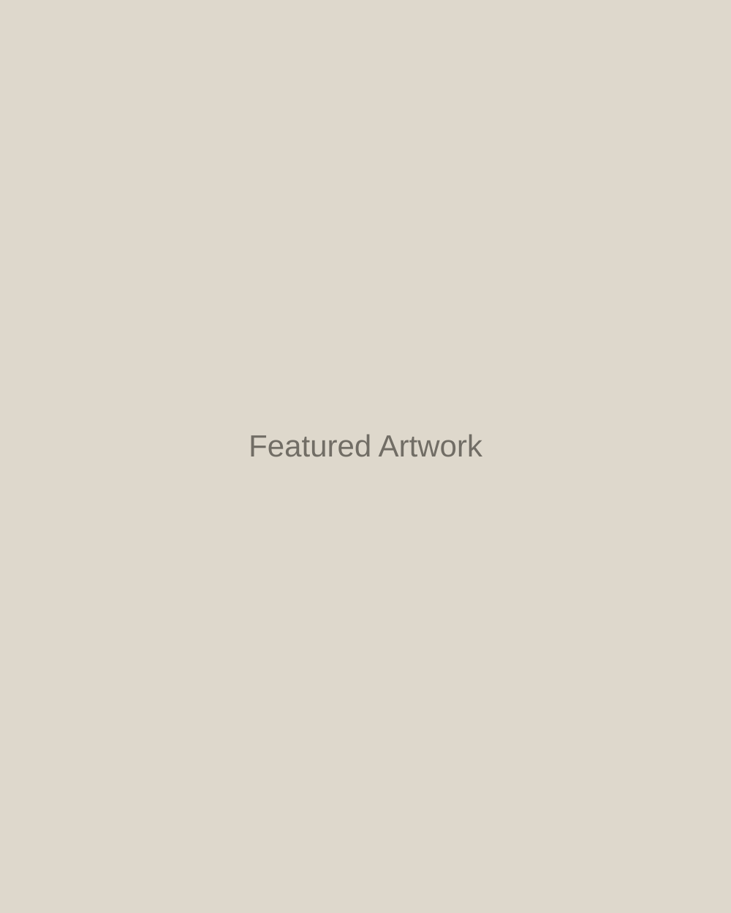

ARTIST • MUSICIAN • MAKER
Hollie
Hix

FEATURED WORKPortfolio
Explore artwork, ceramics, drawings, paintings, and creative projects.
02Music
Watch live performances and discover Hollie's musical work.
03Shop
Original pieces, prints, handmade objects, and more.